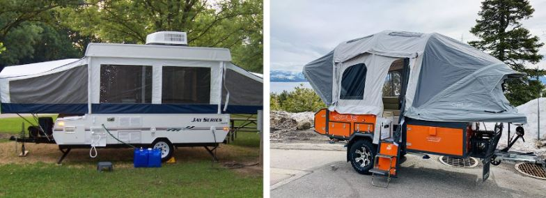
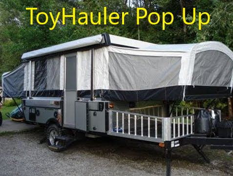
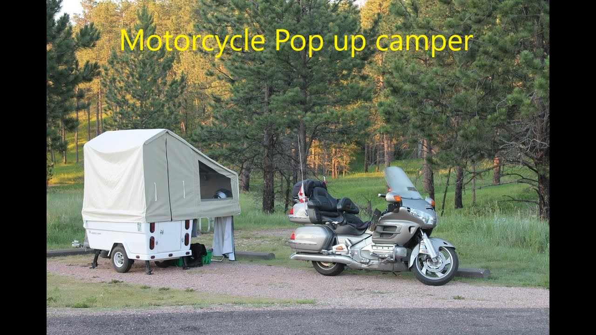
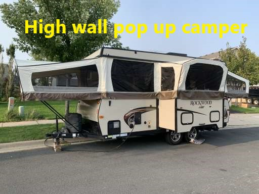
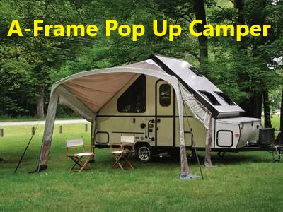
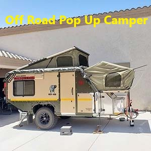

Best Pop Up Campers For Your Small Vehicle
Pop up campers can be folded down to be very small and is excellent for camping. They allow you to rest pleasantly off the ground yet are additionally lightweight as well as simple to tow.
A popup camper is a big jump or upgrade from camping in outdoor tents. They have facilities like seats, tables, compact cooking areas and sometimes even a bathroom area which all depends on the manufacturer and the model. The design of these pop up campers will surely save you a ton of gas compared to other types of rvs.
A small pop up campers can be hauled with nearly any type of automobile: a truck, suv, family vehicle, or even your compact cars. Below you'll discover a checklist of things you should look for as well as several of the very best pop up camper layouts for tiny vehicles.
What Is A Popup Camper?
A pop-up camper is a kind of recreational vehicle that is towed and can be collapsed for simple storage as well as transport. When you set one up, this kind of trailer offers a very spacious interior in contrast to its size when you collapse it. Its fairly affordable pricetag makes it a great choice for someone who is starting out.
Pop up campers, because of their reduced height are an ideal fit for lots of people who intend to camp with the utmost minimum and not too far away from home. The smallest campers can weigh anywhere from 600-800 pounds and can be conveniently maneuvered and also towed effortlessly. In-fact, at times you will certainly not even really feel the camper that you are carrying. It is however, your duty to remember that it is back there. The lightweight material that is used to build campers are the main reason why they can be so light.
How Much Do Pop Up Campers Weigh?
The weight of a pop up camper can differ depending on the size and amenities the specific model offers. Obviously, the bigger your vehicle, the bigger your pop up camper can be. Larger pop up campers that include a cooking area, sink, can weigh upwards of 2000 pounds, while the more simple ones can weigh around 600 pounds. The tiniest camper you can find is easily transported by any car with a hitch and wheels.
Table of examples
| Pop Up Camper Model | Average Weight | RV Length | Sleeps |
|---|---|---|---|
| Texa Cricket Trek | 1500 pounds | 15 feet | 2 People |
| Coachmen Clipper LS | 2204 pounds | 23 feet 5 inches | 4 people |
| Viking Epic Series | 1577 pounds | 12 feet 2 inches | 3 people |
| Aliner LXE | 1795 pounds | 15 feet | 2 people |
| SylvanSportGO | 840 pounds | 11 feet | Sleeps 4 |
| Forest River T12RBTH | 2392 pounds | 22 feet 1 inch | 4 people |
Different Types of Pop-up campers
Pop-up campers come in many different styles and types. Here are the main ones you will likely come into contact with
- Toyhauler pop-ups 
- Motorcycle campers 
- High wall pop-ups 
- A-frame 
A Toyhauler pop-up is one where the toy is towed on top of the pop up or in the front. The toy can be anything like a motorcycle.
As the name indicates, a motorbike camper is a camper that is constructed to be pulled behind a motorcycle and used for camping. They are pop-up campers, just extra small ones.
A high wall pop up camper is a pop up camper that has high walls and includes many amenities while not being a full recreational vehicle like a motorhome.
A-frame pop up campers are all light-weight. They can be towed with with any type of small vehicle.. Unlike the conventional popup camper, A-frame are constructed with a hard side. This makes them much more long lasting and also weather condition immune for outdoor camping. This kind of tiny travel trailer is ideal for couples or tiny families that wish to spend the evening or night out in nature and not having to sleep in the elements.
Off road pop up campers are also called off road tent trailers. They are small, and can be towed behind a truck or SUV. Some can even be towed by small cars. However, it is best to use a 4x4 if you are planning on taking one off-roading.
What are the different types of weight to consider when pulling a camper?
- Dry weight of the camper
- Dry weight means a vehicle may or might not consist of Recreational Vehicle batteries.
- Includes fuel or liquids for any onboard generators
- Gross vehicle weight
- Tongue Weight
- GVW
- Hitch Weight
Dry Weight is the real life weight of a car or trailer having the basic equipment that comes with it without gas, fluids, freight/cargo, guests/passengers, or any type of optional equipment.
Some people go as far as to include these in there meaning:
This is a vital criterion to know. This is actually the real weight of the camper you are towing. It includes the complete dry weight of the camper, weight of all passengers, weight of water, weight of the fuel and the weight of whatever exists in the camper.
Tongue Weight, also called Tongue Load is the actual weight weighing down on the hitch which is caused by the trailer.
Gross Vehicle Weight (GVW) is the real weight of the fully packed automobile or trailer, including all freight, fluids, guests, and optional devices or equipment, which was measured by a scale. If you remain inside a motorhome or camper and not pulling anything, then the GVW is the complete weight of the Motorhome as well as whatever is in it.
Hitch weight is the amount of weight that is placed on a hitch by a camper, any rv or a travel trailer's tongue put on the drawback it is installed to. Any type of individual who is thinking about acquiring a camper needs to know the towing capacities of their vehicle and weight of the camper.
4 Things to consider before buying a pop up camper
- Space will be tight
- Sometimes no AC or heat
- What about the weather?
- Rent one before you buy one
While some pop-ups are substantial in dimension, generally, they live on the more smaller side of the recreational vehicle range. and not only when they are collapsed. Even when they are completely deployed, the readily available room within is limited. There's much less clearance in the areas designated for sleeping. The kitchen space is small. And also storage space is also very restricted.
Some people see the small size and limited space as a benefit in some ways. The smaller sized interior space will likely motivate you to spend even more time on the outdoors, which is normally the reason someone would by a camper anyways. This confined space will make you feel more like you're a camping rather than some other type of outdoor living.
Being partially built of a canvas that is non-insulated, if you try to heat or cool your pop-up camper, it probably will not work. Travel trailers, various other RVs, pop-up campers do not usually feature any type of heating or cooling because of their non-insulated build structure.
Your best bet will be to bring a space heater, generator, and or a fan to cool or heat your pop-up camper. This will however not work as well as it would in a small office or room.
Other types of rvs will do a better job of protecting you from the elements. A good suggestion would be to make sure you check the weather before you go out camping. You would not want to be in a pop-up camper with temperatures too low. On the other hand, you also wouldn't want to be caught in a thunderstorm in a pop-up camper that isn't covered like the others.
Simply put, pop-up campers can give you a great camping experience and be a very cost effective method to enter the RVing scene. Renting a pop-up camper is a very effective way of testing out whether or not one of these small rvs is for you. Before making any type of investment into one, you can rent one for about $50 to $100 per night to see if your investment will be worth it.
How Many People Can a pop up camper Sleep?
Hard-roofed pop-up campers can conveniently sleep 4 or 5 individuals, and usually come geared up with a tiny galley cooking area and also a dining area which is called a dinette. Larger pop up campers can sleep up to 8 people.
So which pop up for camping?
The best thing to do in order to find out which pop up is best for camping is to try a few of them before making your final decision.
Conclusion
A pop up camper can give amazing experiences that you won't find in any other kind of camping. A pop up camper is way easier to tow than a motorhome and provides more comfort than a simple camping tent. Simplicity is the main reason why people would choose to purchase one of these. Make the necessary checks before taking the leap of buying one and you will never be disappointed.